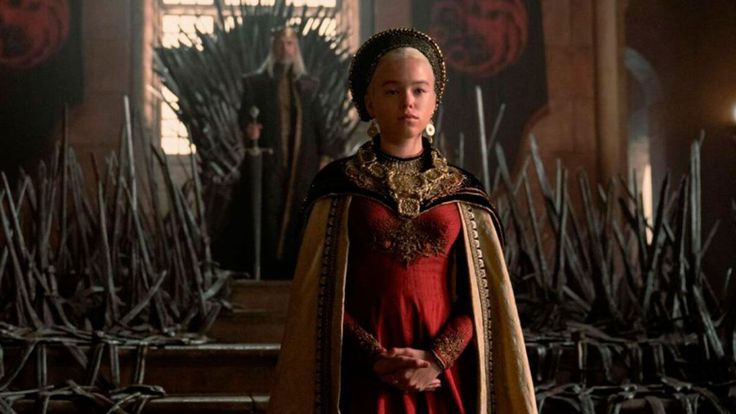

Season One of ‘House of the Dragon’ has wrapped up and it will be a while until fans get to see the next installment. Here’s a look back at what happened.
The episode gives us the first taste of the grizzly scenes that take place in Westeros with Daemon, as commander of the City Watch, leads his men on a bloodthirsty rampage through King’s Landing to clean up the filth as it were. We also see the rivalry between him and Ser Criston Col develop and play out in what is supposed to be a celebratory jousting competition for the birth of what King Viserys hopes is a son.
Although King Viserys has chosen an heir, the small counsel have other plans and call on the sovereign to take another bride to potential sire a son and ensure a line of succession. This leads to one of the more uncomfortable scenes where the twelve-year-old Lady Laena (Nova Foueillis-Mosé), daughter of Lord Corlys and Princess Rhaenys, is presented. However, HBO didn’t go down that road and chose instead to get the king hitched to Alicent.
The marriage to Alicent has been fruitful, roughly three years after the last episode the couple have a son and another on the way. Their first born, Aegon, is named after the great Aegon Targaryen the Conqueror, thus the episodes name.
The fourth episode sees the fight, literally, to have the hand of Rhaenyra. While this installment is more about court intrigue and Targaryen “queer” incestuous customs. The princess agrees to marry Ser Laenor Velaryon making the realm’s security stronger, but she has her father get rid of Otto Hightower as the Hand for his maneuvering to get his grandson Aegon to be the heir over Rhaenyra.
The Iron Throne has not been kind to Viserys and sores that have formed from pricking himself have gotten to what looks like a dangerously unhealthy place. Meanwhile, Alicent, while she didn’t like being used by her family to further their position in the realm is no fan of her father being turfed out of town. She shows up to the wedding wearing her family’s banner color for war, emerald green, and makes sure everyone notices.
Episode six finds everyone a bit older and new children galore. Rhaenyra has two older boys and a third one born during the episode, all fathered by Harwin Strong. Daemon has found a new wife, Laena, and they have a couple of children as well, but the birth of a third doesn’t go well and she chooses to die by dragon fire.
Rhaenyra and Daemon plot to get the upper hand over Alicent, once they are free to marry each other making a stronger claim to the throne when Viserys dies. Laenor’s death is staged and he gets to live happily ever after with his lover, at least we hope so.
Viserys, surprisingly is still alive, if you can call it that, as a walking rotting corpse. He shares Aegon’s vision with Alicent of a prophecy about the end of the world of men that was called “A Song of Ice and Fire.” This convinces her that it shall be her son Aegon who should be king. He shows just how suitable he would be for the job by assaulting Dyana, one of the nannies raising Alicent’s grandchildren.
The conspiracy to make Aegon the next king instead of Rhaenyra was not just being plotted by Alicent and her father. Upon the death of King Viserys, it comes to light that the small council had been planning for that all along. Any dissent on the matter is dealt with quickly, sorry Lord Lyman, and all others that don’t bend the knee immediately head off to the gallows.